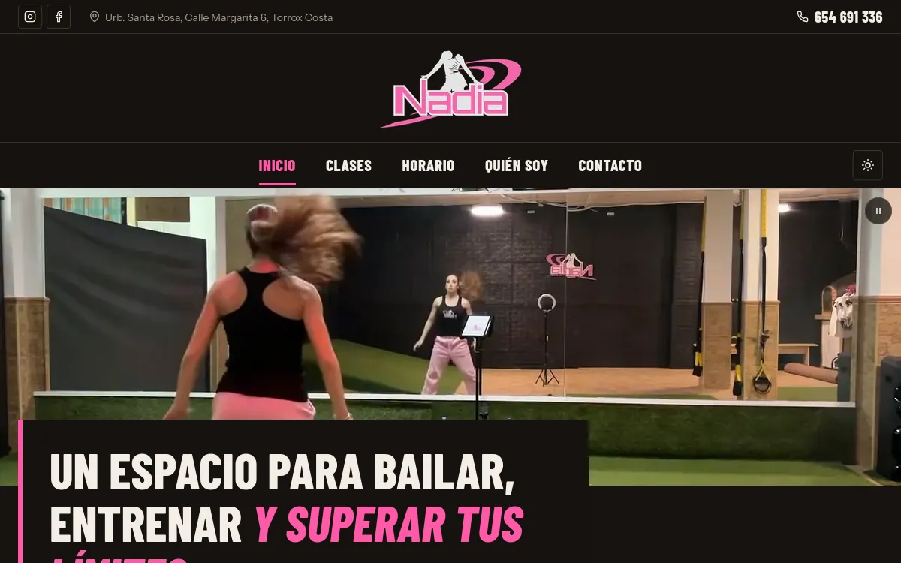
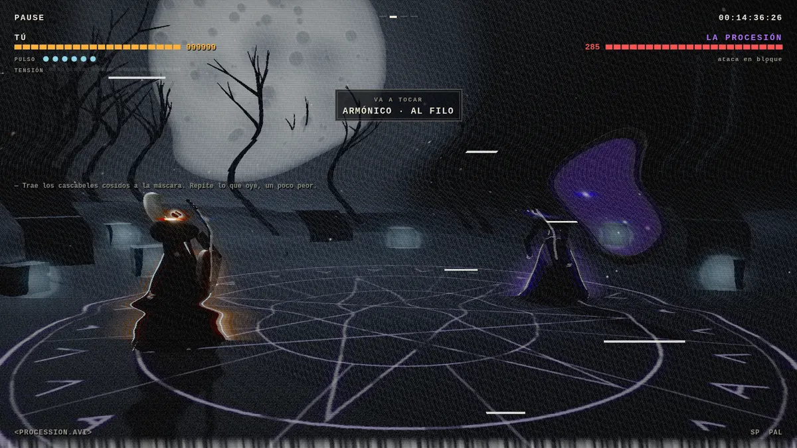
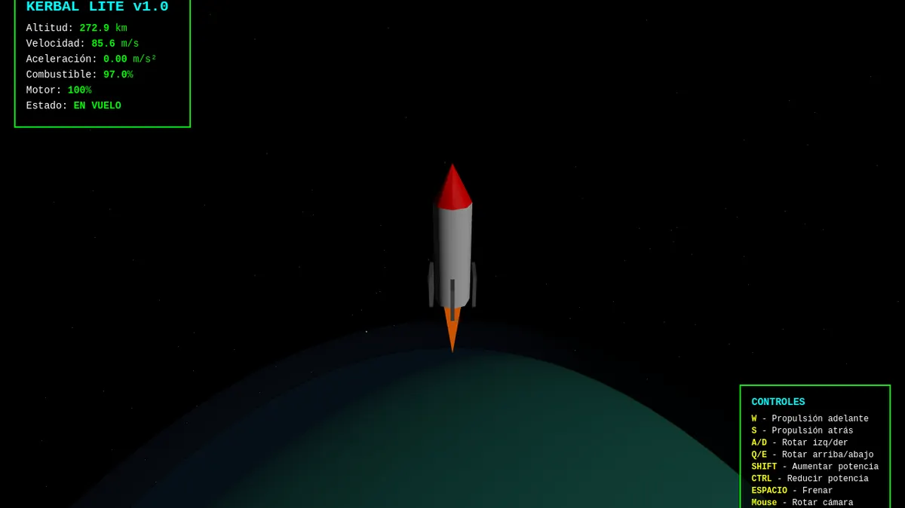

Desarrollador frontend en Torrox, Málaga
Victor Martin Rodriguez
Llevo diez años haciendo frontend. Desde 2022 soy el responsable de frontend en ifeel, una plataforma de bienestar emocional para empresas. Antes pasé cinco años en PcComponentes, donde fui la primera persona de frontend y acabé llevando un equipo de siete.
Lo que más me interesa es lo que no se ve: cómo se despliega una web, cómo se mantiene dentro de dos años y cuánto pesa.
Me encuentras en LinkedIn (se abre en otra pestaña) y en GitHub (se abre en otra pestaña).
Trabajo
2022 – hoy
ifeel
Responsable de frontend
El sistema de temas, escrito a mano sobre Tailwind. También monté la librería de componentes en Storybook y el Chat-Core que comparten nuestras tres plataformas.
Todos los pipelines de frontend. Pasamos de Bitbucket a GitLab con un único pipeline para todos los equipos, y ahora desplegar a producción lleva unos cuatro minutos.
Fullstack cuando hace falta. Si el problema no está en el navegador, bajo al backend y lo arreglo ahí. Y estoy en el comité que decide cómo usamos la IA en el equipo.
React, TypeScript, Tailwind, Vite, Vitest, Storybook, GitLab CI, Bun, AWS S3 y Playwright.
2022
Freepik
Frontend Developer
2017 – 2022
PcComponentes
Senior Frontend Developer
Entré como primer desarrollador de frontend y terminé llevando un equipo de siete personas.
Empecé la migración a React. La tienda venía de Symfony y jQuery, y la llevamos a React y TypeScript.
Me encargué de los Black Friday, el día de más tráfico del año, para que la web aguantara sin caerse. También creamos el primer Storybook y el primer repositorio de paquetes internos.
2017
Freelance
Full Stack Developer · Edimburgo
El buscador de coches de segunda mano de motor.es, además de otros encargos con Angular 2 y PHP.
2017
Koalum
Front-End Developer · Torre del Mar
Aplicaciones web y herramientas de gestión a medida en PHP y JavaScript.
2016
Golden Race
Front End Developer
Apuestas deportivas virtuales que se emitían por satélite en zonas de África con muy poca conexión. Allí aprendí a contar kilobytes.
2015 – 2016
Grupo Vid
Web Developer
Un bingo multijugador para Facebook, con chat y pagos, y apps híbridas con PhoneGap.
2015
Glanzkinder
Front-End Developer · Colonia
Herramientas internas para Deutsche Bahn, con AngularJS.
Un encargo reciente
Nadia Fitness Dance Studio
2026
La web de un estudio de baile y fitness en Torrox Costa. Es pequeña, pero la hice como hago las grandes. Los textos y el horario están en un JSON y un script genera las páginas. axe no encuentra ningún error de accesibilidad, la web funciona sin JavaScript y el vídeo de la portada se puede parar.
Está publicada en nadiafitnessdance.es (se abre en otra pestaña).

Fuera del trabajo
En casa hago juegos y otros experimentos. Estos son algunos:

MOONVERSE
Three.js y Tone.js
Un duelo de solos de guitarra por turnos entre figuras enmascaradas, como si fuera una cinta VHS que alguien encontró. Todo lo que suena se graba, y al final te llevas la canción en .wav y el combate en vídeo.

Homenaje a Cannon Fodder
TypeScript y Canvas
Un homenaje al Cannon Fodder de 1993, escrito desde cero y sin motor. El terreno, los sprites y el sonido se generan en código.

Kerbal Lite
Three.js
Un cohete que despega de un planeta con física newtoniana. El reto es llegar a la órbita.

Japanese Temple
WAD para GZDoom
Dos mapas para Doom, un templo y un castillo. Las texturas de tatami, shoji, madera y tejas salen de scripts en Python.

Pognanza
Lua y LÖVE, con Daniel
Un roguelike de estrategia por turnos en el que montas tu tazo pieza a pieza. Lo hacemos entre dos, y esta es mi versión.
Y en GitHub
- DyslexicFontReplacer (se abre en otra pestaña): una extensión que cambia las fuentes de cualquier web por una tipografía pensada para la dislexia.
- mako_framework (se abre en otra pestaña): menús de RPG clásico hechos solo con HTML y CSS.
Formación
2016 – 2017
Posgrado en Informática Forense y Ciberseguridad, Universidad de Málaga
2015 – 2016
CFGS Desarrollo de Aplicaciones Multiplataforma, IES Portada Alta
2012 – 2015
CFGS Desarrollo de Aplicaciones Web, IES Campanillas
2009 – 2011
CFGM Sistemas Microinformáticos y Redes, IES Jorge Guillén
Idiomas
Español nativo, inglés C1 (Cambridge) y alemán A2, que aprendí trabajando en Colonia.